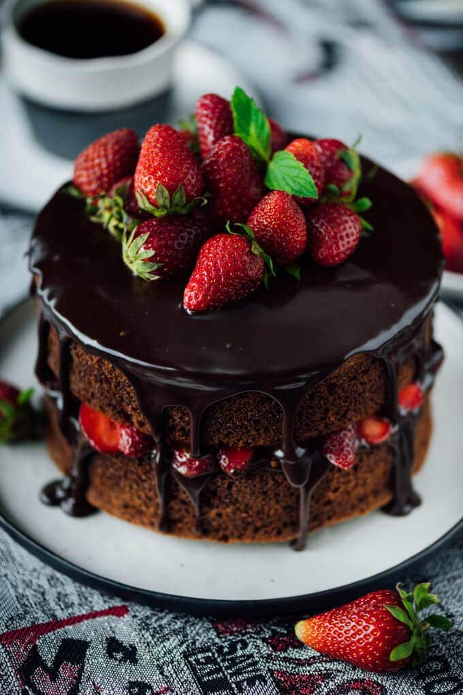

Cake

Description
Looking for a delicious dessert? Enjoy this rich chocolate cake coated
with crunchy cookie crumbs – a delightful treat.
Ingredients
- 2 cups strong coffee
- 2 cups butter
- 1 1/2 cups unsweetened baking cocoa (preferably Dutch processed)
- 4 cups all-purpose flour
- 2 teaspoons chopped fresh or 1 teaspoon dried oregano leaves
- 2 cups granulated sugar
- 1/2 teaspoon salt
- 2 cups packed dark brown sugar
- 1 tablespoon baking soda
- 1 teaspoon salt
-
Adjust oven racks to middle and bottom positions. Heat oven to 350°F.
Spray three 9-inch round pans with cooking spray. Line bottom of pans
with cooking parchment paper rounds; spray with cooking spray.
-
In 3-quart saucepan, heat coffee and butter over medium heat until
butter melts and mixture just comes to a boil. Remove from heat and add
cocoa. Beat with wire whisk until there are no lumps; set aside and cool
5 minutes.
-
In very large bowl, beat flour, granulated sugar, brown sugar, baking
soda and salt with wire whisk. Pour coffee mixture over dry ingredients
and stir just until no dry flour mixture is visible. In small bowl, beat
eggs and egg yolk with wire whisk. Add to flour mixture, beating well.
Stir in sour cream and 2 teaspoons vanilla until well mixed.
-
Pour batter into pans. (Batter will nearly reach tops of pans.)
Carefully place pans in oven, 2 on bottom rack and 1 one on middle rack.
Bake 45 to 50 minutes or until cake tester or toothpick inserted in
center comes out clean and cake top is no longer wobbly. Cool on wire
racks, about 10 minutes. Invert cake layers onto wire racks and remove
parchment paper. Cool completely, about 1 hour. (Layers are easier to
handle when cold, so you may want to wrap them in plastic wrap and
refrigerate 8 to 12 hours before frosting.)